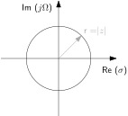

Curculionoidea parasitized by Ophiocordyceps curculionum (Iquitos, Peru)
22051
Signals and Systems in Discrete Time
Lecture 5
Reframing: Circles and spaces of circles
Bastian Epp
What happened last week
- Windowing of signals and the effect on the spectrum
- Linear vs. circular convolution
- Block processing
- From frequency to z
Truncation of signals in the time domain
Infinitely long is too long


- Truncating of signal equal to multiplication with a square wave
- Cutting leads to oscillation in spectrum (Gibb’s phenomenon)
Linear and circular convolution
Different length means different frequency resolution
Equivalence if “compatible for multiplication”: Convolution in time is multiplication in frequency domain (e.g. impulse response) \[ y(n) = x_1(n) \ast x_2(n) \Rightarrow Y(\omega) = X_1(\omega) \cdot X_2(\omega) \] But only if (!) frequency bins match up!


Filteringin the frequency domain
Same length means same spectral resolution
Matching and non-matching frequency bins


- Point-wise multiplication of frequency-bins
- Convolved signal has same length as initial signals
- What can this be useful for? And why?
Processing of signal chunks
This is one way of doing it
With real signals!

What happens in session #?
...let's dig deeper...
What is going to happen today
- The z-domain and the transfer function
- Geometrical interpretation of the z-plane
Small-group discussions!
Let’s do the math: From frequency to z-space
Generalization of the Fourier space
Introduce a new variable $z \in \mathbb{C}$
\[ z = e^{\sigma + j \Omega} \quad \ln(z) = \sigma + j \Omega \quad \frac{1}{z} dz = j d\Omega \]
Let’s do the math: From frequency to z-space
Generalization of the Fourier space
Bilateral z-transform pair
\[ X(z) = \sum_{n=-\infty}^{-\infty} \qquad x(n) = \frac{1}{2\pi j} \oint X(z) z^{n-1} dz \]- Components are now exponentially growing/decaying harmonic functions
- With the special case being \[z = e^{\sigma + j \Omega} \qquad \sigma=0 \Rightarrow z|_{\sigma =0} = e^{j\Omega} \]
- The frequency space lives on the unit circle in the z-plane!
- Linear transform (as Discrete Fourier Transform - DFT)
System equations describe systems
The running sum as a system

Bottomline
From z-space to frequency
“Estimating” the frequency response from the z-transform: Relevant for filter design
Bottomline
Transfer function and z-plane
SUBTITLE
Bottomline
a visual approach
What if the z-plane was a rubber membrane...
Bottomline
Quickie Nr 4
Take a few minutes to answer the following questions:
- Under which condition are circular and linear convolution of x(n) and h(n) identical?
- Why is a signal synthesized from the Fourier domain always periodic?
- Where can the Fourier domain be found in the z-domain?
- Which are the “elements” used in the z-transform and how do they differ from the “elements” used in the Fourier transform?
They are identical if the spectra of x(n) and h(n) both have length [length(x(n)) + length(h(n)) -1], ie, the same length as the resulting signal after linear convolution in the time domain.
The elements in the Fourier domain are harmonic oscillations. The Fourier transform analyzes/synthesizes signals using these elements. Since each element is periodic, is the sum of such elements also periodic.
The Fourier domain is obtained from the z-domain by replacing z → e jΩ (unit circle).
The elements in the z-transform are exponentially growing or decaying oscillations. The elements of the Fourier transform are a subset of these with an infinitely slow decay.
Microgecko (Tropiocolotes) latifi (?)